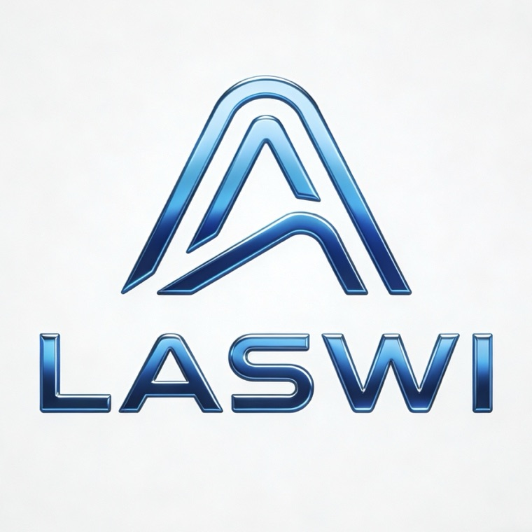
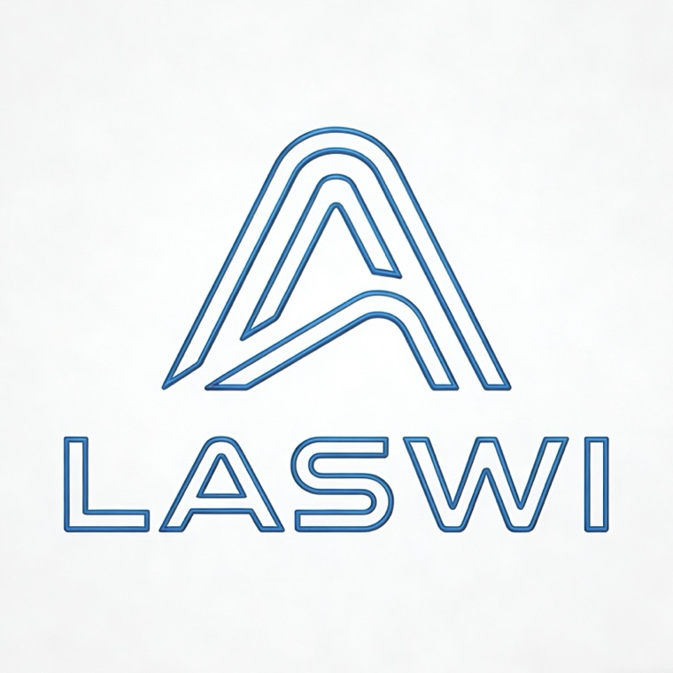

TIMELINE — 2025.07 →
TIMELINE
時間軸
從一個名字，到一間工作室。中間那些節點，按時間排在同一條線上。
時間軸
-
2025 07命名
Laswi 這個名字被創造出來
還沒有產品，也還沒有工作室，先有一個名字。
-
2025 11改名
正式改名 LaswI
大小寫定案：小寫 i 收成大寫 I，名字自此固定，沒再改過。
-
2026 03第一款大眾產品
LaswI Web 正式面向大眾
不用下載，開一個分頁就能用——第一個交到所有人手上的東西。
-
2026 04成立
LaswI Studio 正式成立
名字終於有了去處，作品開始以工作室的名義發布。
-
2026 06發布
LaswI App 正式發布
Web 之後，App 版本跟著上線。
-
2026 09合作
迎來第一批合作夥伴
第一批夥伴加入，四張卡片掛上了首頁。
-
2026 10.17音樂
HayMusic《彩虹為序》上架騰訊音樂平台
HayMusic 的第一款音樂，同步上線 QQ 音樂、酷狗音樂、酷我音樂。
-
2026 →未完
LaswI 還在往前走
2026 之後繼續。這條時間軸還沒有結束的那一天。
LOGO ITERATION — 001 → 004
LOGO 標誌迭代
四版標誌，按時間排列。每一版都留下來，不刪掉。
-
001 第一版
-

002 第二版
-

003 第三版
-
004 第四版 · 現行
時間軸停在這一步，但工作室沒有。
回 LaswI Studio 首頁